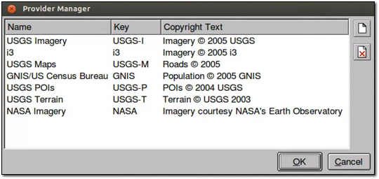

Setting Up the Tutorial¶
In Google Earth Enterprise Open Source, the fusion tutorial data is not included in the installation packages. Refer to Configure Tutorial Workspace for download and installation instructions.
In older versions, the Google Earth Enterprise Fusion tutorial
data is provided on the Google Earth Enterprise Fusion
installation DVD and should have been installed in
/opt/google/share/tutorials/fusion/ on your workstation or
network. In addition, your system administrator should have
configured a tutorial environment for you to work on the tutorial
lessons, keeping your practice data separate from your live
production data.
If Google Earth Enterprise Fusion or the tutorial files are not installed or you encounter an error message that tells you that a tutorial source file is not readable or you cannot save a resource, contact your system administrator or refer to Configure Tutorial Workspace to install the files and configure the tutorial environment before saving any practice data.
As you follow the steps in this tutorial, you will begin to learn how to create 2D and 3D databases, as well as become familiar with the Google Earth Enterprise Fusion user interface.
- Select the Tutorial Asset Root
- Launch Google Earth Enterprise Fusion
- Build the Asset Navigation Tree
- Define Source Providers
- Define Resource Paths
Select the Tutorial Asset Root
There are two occasions when you must select a different asset root:
- When multiple users share a single workstation, you must select your own tutorial asset root.
- When you switch from the tutorial data to real production data, you must select the appropriate asset root.
To configure asset roots for multiple users, see Configure Tutorial Workspace.
This section explains how to select a different asset root.
Warning
Caution: Even though your source volumes and asset roots are separate for each user or for the tutorial and production data, there is only one publish root on each virtual server for Earth databases and one for Map databases.
When two users are sharing a single workstation, both users are publishing to the same publish root. When one user publishes a database on that workstation, it overwrites any database that might have been published previously by another user on that same workstation. Likewise, if you are switching back and forth between tutorial and production data on the same workstation, it is possible to overwrite a production database with a tutorial database and vice versa. Of course, you can republish the desired database to make it available to Google Earth EC again.
To select the tutorial asset root:
On the command line, log in as root.
Stop the system manager by entering:
/etc/init.d/gefusion stopEnter:
geselectassetroot --assetroot /username/assetswhere username is the name you or your system administrator used when configuring the tutorial asset root. (If you do not know the path of your tutorial asset root, contact your system administrator.)
When you return to the prompt, log out as root.
Start the system manager by entering:
/etc/init.d/gefusion start
Launch Google Earth Enterprise Fusion
- Open a Linux terminal window.
- Enter
fusion(orfusion &to return to the Linux prompt).
When the application starts, the Google Earth Enterprise Fusion graphical user interface (GUI) appears.
The components of a Google Earth Enterprise Fusion database are
called assets. The main location where you store all of your
Google Earth Enterprise Fusion assets is called the asset root.
The asset root is located in the main Google Earth Enterprise
Fusion volume–in most cases, /gevol/assets. For the tutorial
lessons, this guide refers to the tutorial asset root to
differentiate it from the asset root that contains your live data.
In this exercise, you add subfolders to the tutorial asset root, so you can store your assets in an organized way.
Warning
Caution: Once you create subfolders in your asset root, you cannot delete them. This makes it especially important for you to plan out and organize your subfolders before you or anyone else begins working with real data in Google Earth Enterprise Fusion.
To add a subfolder:
Open the Asset Manager by selecting Tools > Asset Manager. The Asset Manager appears: The asset navigation tree appears on the left side of the Asset Manager, and
ASSET_ROOTis the only folder on the tree.Right-click ASSET_ROOT, and select New Subfolder from the context menu. The New Subfolder dialog appears.
Enter Resources as the name of the new subfolder, and click OK. The new subfolder appears in the asset navigation tree.
In the same way, add three more subfolders:
- MapLayers
- Projects
- Databases
All four subfolders appear in alphabetical order in the asset navigation tree.
For the Projects and Resources folders you just created, right-click to create the following subfolders:
- Vector
- Imagery
- Terrain
You do not need to create Vector, Imagery, and Terrain subfolders for the MapLayers or Databases folders.
Close the Asset Manager by clicking the close box (X) in the top right corner.
Define Source Providers
The Provider Manager allows you to create a list of organizations that provide the source data you use in Google Earth. For each provider, you specify a unique lookup key (any unique abbreviation you choose) and copyright information. When you create a resource, a data provider is associated with it, so that when the resource is displayed in Google Earth EC, the appropriate copyright information is also displayed.
To create a source provider:
Open the Provider Manager by selecting Tools > Provider Manager.

Click the
 icon:
icon:The Edit Provider dialog appears.

Enter the following information:
Name: USGS Imagery Key: USGS-I Copyright Text: Imagery © 2005 USGS To enter the copyright symbol, open a text editor, press CTRL-SHIFT-U, then enter the Unicode 00A9. Copy and paste the displayed symbol into the dialog.
Click OK.
Repeat steps 2 through 4 to add the following source providers:
Name Key Copyright Text i3 i3 Imagery © 2005 i3 USGS Maps USGS-M Roads © 2005 USGS GNIS/US Census Bureau GNIS Population © 2005 GNIS USGS POIs USGS-P POIs © 2004 USGS USGS Terrain USGS-T Terrain © USGS 2003 NASA Imagery NASA Imagery courtesy NASA’s Earth Observatory The new providers appear in the Provider Manager dialog in the order in which you added them: 
Click OK to close the Provider Manager.
Define Resource Paths
The Asset Manager Resource Editor Default Source Paths screen allows you to specify default paths for Vector, Imagery, and Terrain resource types.
To define resource paths:
Open the Asset Manager Resource Editor Default Source Paths by selecting Edit > Preferences > Asset Manager.

Click the
 icon on the right-hand side for Vector.
icon on the right-hand side for Vector.The Select Folder dialog appears.
Navigate to
/opt/google/share/tutorials/fusion.Select Vector, then click OK.
Repeat steps 2 through 4 for Imagery and Terrain.
Click the OK button to close the Asset Manager Resource Editor Default Source Paths, and go on to the next lesson.